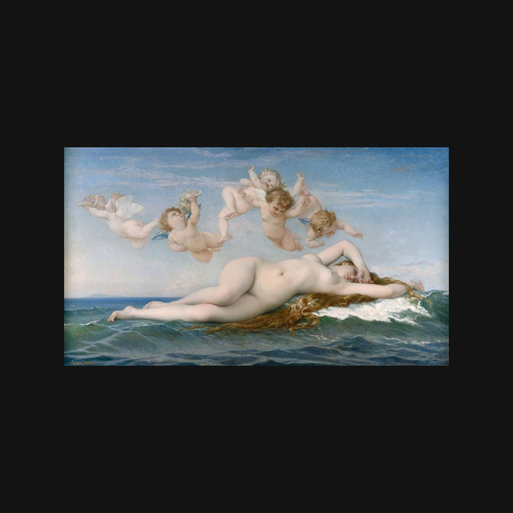

維納斯的誕生
卡巴內爾 · 1863年
La Naissance de Vénus
導賞節錄
佢橫臥喺浪邊，身體舒展開嚟。上空一班小愛神排成一串，好似一個花環。
呢幅係《維納斯的誕生》，作者係亞歷山大·卡巴內爾，一八六三年嘅布面油畫，闊兩米幾。卡巴內爾係十九世紀法國學院派畫家，畫歷史、神話同肖像。一八六三年美術教育改革之後，巴黎美術學院三間畫室入面，有一間由佢主持。
— 廣東話講稿 · Artvery
完整講解約 3 分鐘，可在 Artvery App 收聽。粵語、台灣國語、內地普通話三種語音，館內對準作品即可識別播放。
即將登陸 App Store
App 即將推出，敬請期待。推出後免費下載，每座博物館單獨購買，一次購買永久使用。
作品資料
- 作者
- 卡巴內爾
- 年代
- 1863年
- 尺寸
- 130 × 225 厘米
- 位置
- 奧賽博物館 · 學院派與現實主義展廳
- 館藏編號
- RF 273
奧賽博物館參觀攻略：必看名作和路線 · 奧賽博物館廣東話語音導賞